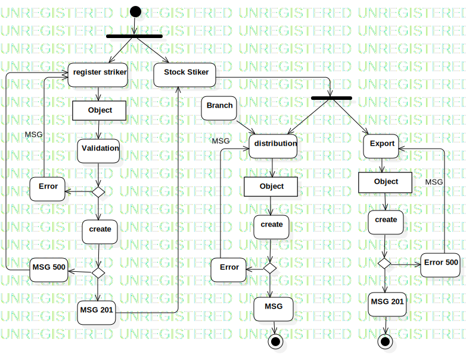

Activity
UMLActivity
Model
::
Striker
::
Activity
Description
none
Diagrams

Activity
Nodes
InitialNode1
register striker
ForkNode1
Stock Stiker
Object
Validation
DecisionNode1
Error
create
ForkNode2
distribution
Export
Branch
Object
create
DecisionNode2
Error
MSG
ActivityFinalNode1
DecisionNode3
MSG 500
MSG 201
Object
create
DecisionNode4
MSG 201
Error 500
ActivityFinalNode2
Edges
(InitialNode1→ForkNode1)
(ForkNode1→register striker)
(ForkNode1→Stock Stiker)
(register striker→Object)
(Object→Validation)
(Validation→DecisionNode1)
(DecisionNode1→Error)
(DecisionNode1→create)
MSG (Error→register striker)
(MSG 201→Stock Stiker)
(Stock Stiker→ForkNode2)
(ForkNode2→distribution)
(ForkNode2→Export)
(Branch→distribution)
(distribution→Object)
(Object→create)
(create→DecisionNode2)
(DecisionNode2→Error)
(DecisionNode2→MSG)
MSG (Error→distribution)
(MSG→ActivityFinalNode1)
(create→DecisionNode3)
(DecisionNode3→MSG 500)
(DecisionNode3→MSG 201)
(MSG 500→register striker)
(Export→Object)
(Object→create)
(create→DecisionNode4)
(DecisionNode4→MSG 201)
(DecisionNode4→Error 500)
MSG (Error 500→Export)
(MSG 201→ActivityFinalNode2)
Properties
Name
Value
name
Activity
stereotype
null
visibility
public
isReentrant
true
isReadOnly
false
isSingleExecution
false
Owned Elements
Activity